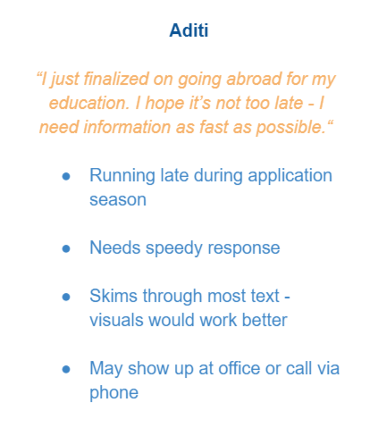
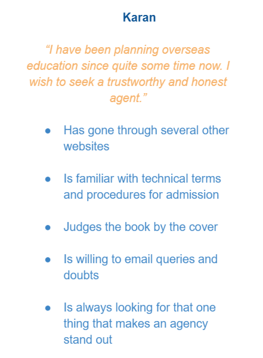
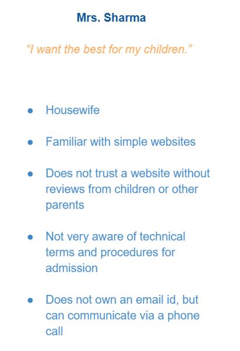

OVERVIEW
For my internship at Felix Educare, I was responsible for the UX and UI of the their website.
I used Figma and Adobe XD for designing. I introduced my client to Webflow CMS, as it simplified the blogging experience.
ROLE
UX/UI Design Intern
DURATION
June - August, 2018
USER RESEARCH
To understand feel of the company, I had several interviews with the founder and went through the reviews of all their clients.
I carried out extensive research on the educational services space and came up with the following personas.


